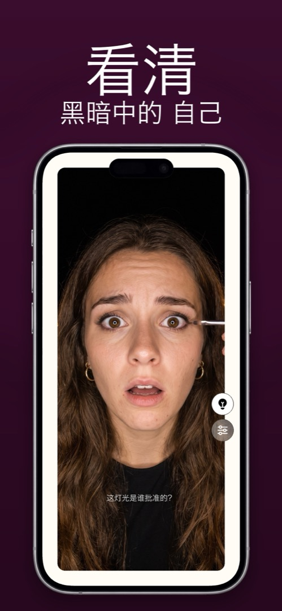

化妆
随时随地补妆的化妆镜 App
一面好的化妆镜需要两样浴室镜子很少有的东西：来自正面的均匀光线，以及放大。环形补光灯和 10 倍随身镜就是为此而生。你的 iPhone 也可以——只要 App 把前置摄像头当镜子用，而不是当相机用。
化妆镜好不好用，看什么
- 正面光，而不是顶光。顶灯会在眼睛和鼻子下面投下阴影，所以在浴室化的妆到了外面就不一样。环绕摄像头的光线能均匀照亮整张脸。
- 可调色温。暖光灯泡会让粉底显得黄一个色号。能在暖光和中性光之间调节的环形补光，让你两种都能看。
- 放大——画眼线、刷睫毛、修眉。1.5–2 倍最合适。
- 解放双手——你两只手都要用。把手机靠在包、显示器或杯子上，并确保屏幕不会自动熄灭。
真正派上用场的地方
只有一根日光灯管的公司卫生间。晚饭前的车里。飞机上。音乐节的帐篷。唯一一面镜子挂在台灯上方的酒店房间。任何你需要眯着眼看随身镜的地方，带环形补光的手机都能做得更好。
小建议
- 手机举到与视线平齐，别放低——从下往上打光会放大一切。
- 眼线和睫毛用 2 倍画，然后回到 1 倍看整张脸。
- 要出门的话，在日光下再看一次——没有哪块屏幕比得上太阳。
在 Mirrorly 里怎么做
在 Mirrorly 里补一次妆是这样的：
- 打开 Mirrorly，把手机支到与视线平齐。在设置里打开保持屏幕常亮，这样双手忙碌时屏幕也不会熄灭。
- 点一下灯泡。屏幕边缘变成环绕摄像头的柔和环形补光；在设置里调节色温。
- 双指捏合或滑动，放大画眼线、刷睫毛、修眉；再缩小检查整体平衡。
- 关掉 App。没有拍任何照片——这是镜子，不是自拍。

Mirrorly 即将登陆 App Store。
iPhone 全屏镜子，带环形补光、缩放和最高亮度。免费检查三次，之后一次性购买——没有订阅，不保存照片，无需账号，没有广告。
即将登陆 App Store下载 Mirrorly